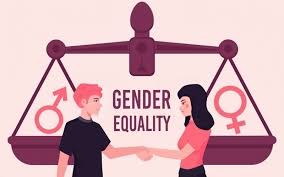
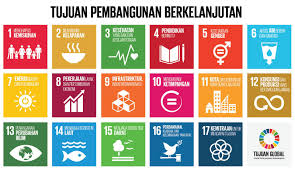
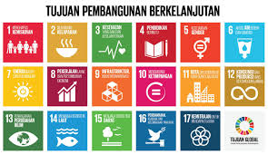

 

Tujuan SDGs ke-5, Kesetaraan Gender, bertujuan menghapus diskriminasi, meningkatkan akses perempuan terhadap pendidikan, dan memastikan partisipasi mereka dalam pengambilan keputusan. Isu ini sangat relevan secara global karena perempuan di banyak negara, termasuk Indonesia, masih menghadapi hambatan besar dalam pendidikan, pekerjaan, dan keamanan. Dengan mendorong kesetaraan gender, tidak hanya keadilan sosial yang tercapai, tetapi juga pembangunan ekonomi dan stabilitas masyarakat yang lebih baik.
Kerjasama bilateral melibatkan dua negara, seperti Indonesia dan Jepang yang bekerja sama memberikan pelatihan teknologi bagi perempuan. Regional, contohnya melalui ASEAN Committee on Women (ACW), yang memperjuangkan perlindungan dan pemberdayaan perempuan di Asia Tenggara. Di tingkat multilateral, Indonesia bekerja sama dengan UN Women dalam program global "HeForShe," yang melibatkan laki-laki untuk mendukung kesetaraan gender. Ketiga jenis kerjasama ini memperkuat upaya kolektif mencapai SDGs.
SDGs dan kerjasama internasional saling melengkapi karena tantangan global seperti kesenjangan gender tidak bisa diselesaikan secara individu oleh satu negara. Program-program global, seperti UN Women, diimplementasikan secara lokal di Indonesia melalui kebijakan yang sesuai. Dengan berbagi pengalaman, teknologi, dan sumber daya melalui kerjasama internasional, target SDGs dapat dicapai lebih efektif dan bermanfaat secara luas, baik di tingkat nasional, regional, maupun global.